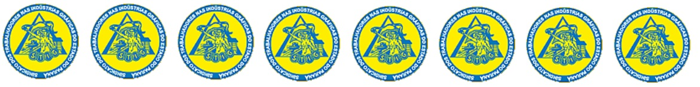

SINDICATO DOS TRABALHADORES NAS INDÚSTRIAS GRÁFICAS DO ESTADO DO PARANÁ
R. Basílio Itiberê, 3080 – Rebouças – CEP: 80250-160 – CURITIBA – PR
CONFIRA AQUI MAIS INFORMAÇÕES NO SITE DO SINDICATO
Entidade de primeiro grau, fundada em 30 de abril de 1911 como CENTRO GRÁPHICO PARANAENSE, adaptado em 05 de fevereiro de 1937 para SINDICATO DOS TRABALHADORES NAS INDÚSTRIAS GRÁFICAS DE CURITIBA. Re adaptado e reconhecido pelo Ministério do Trabalho em 27 de outubro de 1942, sendo reconhecido de Utilidade Pública Estadual em 01 de junho de 1984 e Municipal, em 06 de junho de 1986. Fundador da Federação dos Trabalhadores nas Indústrias do Estado do Paraná, entidade eclética de 2º grau, da qual é filiada. Pertence ao 12º grupo da CNTI – Confederação Nacional dos Trabalhadores nas Indústrias, sendo filiado a Central Força Sindical.
SINDICATO DOS TRABALHADORES NAS INDÚSTRIAS GRÁFICAS EM EMPRESAS DE JORNAIS E REVI STAS DE LONDRINA
CONFIRA AQUI MAIS INFORMAÇÕES NO SITE DO SINDICATO
SINDICATO DOS TRABALHADORES NAS INDÚSTRIAS GRÁFICAS DE CASCAVEL/PR E REGIÃO
AV. Brasil nº 5256 – 3º andar – CEP 85812-001- Cascavel – Paraná
Fone/Fax (45) 3038.5117
CONFIRA AQUI MAIS INFORMAÇÕES NO SITE DO SINDICATO
Abrangência territorial em Altamira do Paraná/PR, Alto Piquiri/PR, Altônia/PR, Ampére/PR, Araruna/PR, Assis Chateaubriand/PR, Barbosa Ferraz/PR, Barracão/PR, Boa Esperança do Iguaçu/PR, Boa Esperança/PR, Boa Vista da Aparecida/PR, Cafelândia/PR, Cafezal do Sul/PR, Campina da Lagoa/PR, Campo Mourão/PR, Candói/PR, Cantagalo/PR, Capanema/PR, Capitão Leônidas Marques/PR, Cascavel/PR, Catanduvas/PR, Céu Azul/PR, Chopinzinho/PR, Clevelândia/PR, Corbélia/PR, Coronel Domingos Soares/PR, Coronel Vivida/PR, Corumbataí do Sul/PR, Cruzeiro do Oeste/PR, Dois Vizinhos/PR, Douradina/PR, Enéas Marques/PR, Engenheiro Beltrão/PR, Farol/PR, Flor da Serra do Sul/PR, Formosa do Oeste/PR, Foz do Iguaçu/PR, Francisco Alves/PR, Francisco Beltrão/PR, Goioerê/PR, Guaíra/PR, Guaraniaçu/PR, Guarapuava/PR, Honório Serpa/PR, Icaraíma/PR, Iporã/PR, Iretama/PR, Itapejara D’oeste/PR, Ivaté/PR, Janiópolis/PR, Jesuítas/PR, Juranda/PR, Laranjal/PR, Laranjeiras do Sul/PR, Luiziana/PR, Mamborê/PR, Mangueirinha/PR, Marechal Cândido Rondon/PR, Maria Helena/PR, Mariluz/PR, Mariópolis/PR, Marmeleiro/PR, Matelândia/PR, Medianeira/PR, Missal/PR, Moreira Sales/PR, Nova Aurora/PR, Nova Cantu/PR, Nova Esperança do Sudoeste/PR, Nova Olímpia/PR, Nova Prata do Iguaçu/PR, Nova Santa Rosa/PR, Nova Tebas/PR, Palmas/PR, Palmital/PR, Palotina/PR, Pato Branco/PR, Peabiru/PR, Pérola/PR, Pinhal de São Bento/PR, Pinhão/PR, Pitanga/PR, Planalto/PR, Pranchita/PR, Quedas do Iguaçu/PR, Quinta do Sol/PR, Ramilândia/PR, Rancho Alegre/PR, Realeza/PR, Renascença/PR, Roncador/PR, Salgado Filho/PR, Santa Helena/PR, Santa Izabel do Oeste/PR, Santa Maria do Oeste/PR, Santa Terezinha de Itaipu/PR, Santo Antônio do Sudoeste/PR, São João/PR, São Jorge do Patrocínio/PR, São Jorge D’oeste/PR, São José das Palmeiras/PR, São Miguel do Iguaçu/PR, Saudade do Iguaçu/PR, Sulina/PR, Tapejara/PR, Tapira/PR, Terra Boa/PR, Terra Roxa/PR, Toledo/PR, Três Barras do Paraná/PR, Tuneiras do Oeste/PR, Tupãssi/PR, Turvo/PR, Ubiratã/PR, Umuarama/PR, Vera Cruz do Oeste/PR, Verê/PR, Virmond/PR, Vitorino/PR e Xambrê/PR.